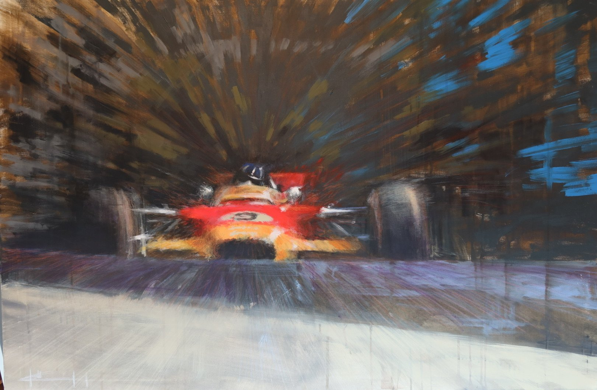
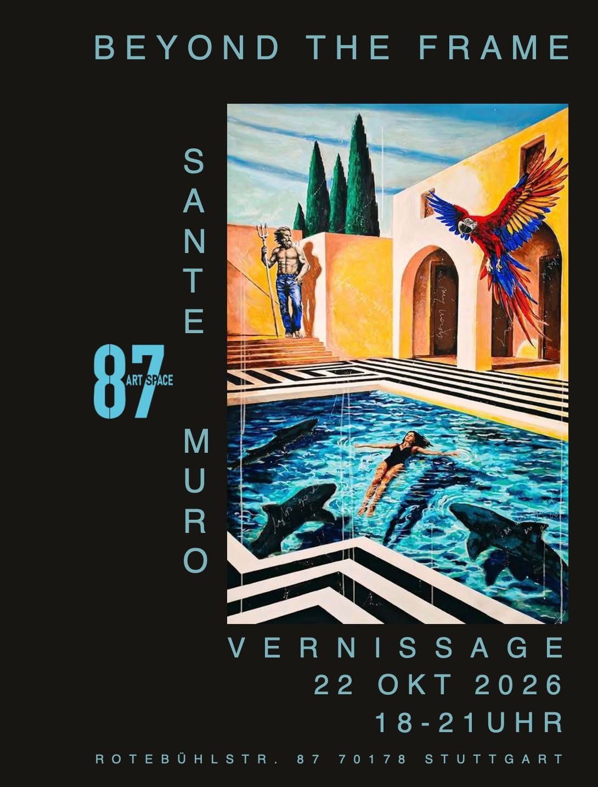
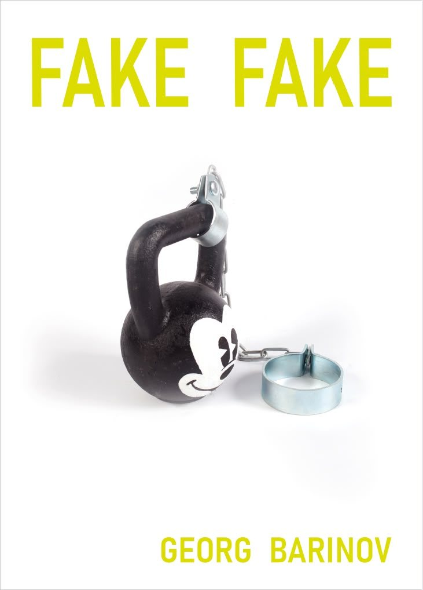

Ausstellung
Traces of Motion
Steffen Köhl
28.11.2026 – 10.01.2027 · demnächst
Ausstellungen und Events im 87artspace. Das Archiv wächst mit jeder Show.

Ausstellung
Steffen Köhl
28.11.2026 – 10.01.2027 · demnächst

Ausstellung
Sante Muro
22.10. – 21.11.2026 · aktuell zu sehen

Event
Seminar für Beiräte und Aufsichtsräte
Oktober 2026

Ausstellung
Georg Barinov
13.07. – 30.08.2026
Noch keine Events. Bald gibt es mehr.